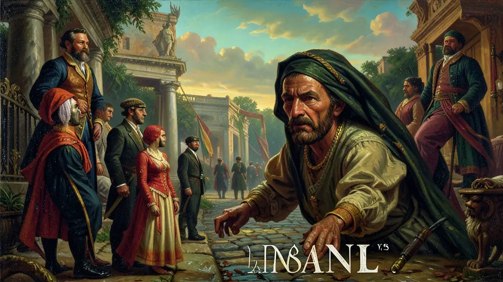
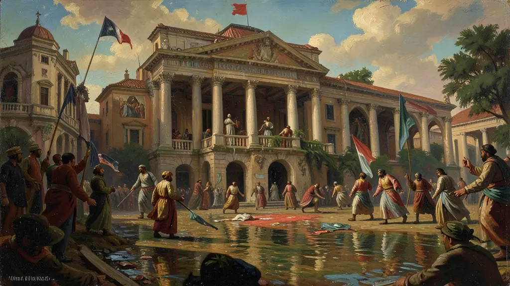

Capítulo 01
1. AIB: Fachada Fascista no Brasil
Plínio Salgado queria um Brasil forte e centralizado. Os integralistas usavam o Sigma (Σ) como símbolo e pregavam o corporativismo. Odiavam a democracia liberal e o comunismo, acreditando que o Estado deveria ser o pai de todos. Eram organizados como um exército, desfilando pelas ruas das capitais em demonstração de força e disciplina.
Capítulo 02
2. ANL: A Frente Ampla de Esquerda
A Aliança Nacional Libertadora foi um movimento de massas. Prestes foi o símbolo dessa luta. Eles queriam que o Brasil parasse de ser uma fazenda das potências estrangeiras e fizesse uma reforma agrária radical. Vargas, no entanto, viu nesse movimento uma ameaça ao seu projeto de poder e usou a lei de segurança nacional para caçar os membros da ANL.

Capítulo 03
3. Intentona Comunista: O Erro de Cálculo
Em 1935, quartéis em Natal, Recife e Rio de Janeiro rebelaram-se. Eles achavam que o povo iria para as ruas seguir os comunistas, mas o exército de Vargas massacrou a revolta em poucos dias. O fracasso da intentona deu a Vargas a 'carta branca' para decretar estado de sítio e perseguir toda e qualquer oposição, em nome da defesa da pátria.

Capítulo 04
4. Olga Benário: O Sacrifício Diplomático
Olga, alemã e judia, veio ao Brasil para proteger Prestes. Grávida, foi presa por Vargas após a intentona e enviada de navio para a Alemanha de Hitler como um 'presente' diplomático. Ela morreu em uma câmara de gás em Bernburg. Esse episódio é uma das maiores manchas na biografia de Vargas e mostra a crueldade do regime contra os militantes da ANL.
Capítulo 05
5. O Fim dos Camisas Verdes (1938)
Plínio Salgado achou que Vargas iria dividir o poder com ele no Estado Novo. Quando percebeu que foi enganado, os integralistas tentaram invadir o palácio de Getúlio com metralhadoras em punho. Vargas, escondido com sua família, resistiu até a chegada dos guardas. O movimento foi esmagado e Salgado fugiu para o exílio em Portugal. Vargas não aceitava rivais, nem mesmo os da extrema-direita.
O Manifesto da Aliança Nacional Libertadora (ANL), lançado em março de 1935, representou o ápice da radicalização política no Brasil da Era Vargas. Sob a liderança honorária de Luís Carlos Prestes, o movimento aglutinava comunistas, socialistas e liberais progressistas em uma frente única contra o avanço do fascismo internacional e o imperialismo econômico. O programa da ANL, que incluía a suspensão do pagamento da dívida externa e a reforma agrária, desafiava diretamente as bases da elite agrária e industrial brasileira.
Em contrapartida, a Ação Integralista Brasileira (AIB), liderada por Plínio Salgado, buscava instaurar um Estado corporativista sob a égide do nacionalismo ufanista 'Deus, Pátria e Família'. Inspirada diretamente no fascismo italiano, a AIB possuía uma rígida estética militarista, com seus 'Camisas Verdes' realizando desfiles e saudações padronizadas. O embate entre as duas siglas transformou as ruas das grandes capitais brasileiras em campos de batalha ideológicos, refletindo o clima de polarização que antecedeu a Segunda Guerra Mundial.
O desfecho dessa polarização foi favorável ao pragmatismo autoritário de Getúlio Vargas. Ao colocar a ANL na ilegalidade e usar a tentativa fracassada de levante comunista (Intentona de 35) como pretexto, Vargas conseguiu implementar o Estado Novo em 1937, fechando o Congresso e eliminando tanto a ameaça da esquerda quanto, posteriormente, a autonomia dos integralistas. Esse período é crucial para o Enem por demonstrar como situações de crise e radicalização podem ser utilizadas como catalisadores para rupturas democráticas.
Fonte: SILVA, Hélio. 1935: A Revolta Vermelha. Rio de Janeiro: Civilização Brasileira, 1969.
Atividades interativas
Questões para fixar
A ANL (Aliança Nacional Libertadora) foi um movimento político dos anos 30 liderado por Luís Carlos Prestes. Qual era o seu principal lema de luta?
O movimento Integralista Brasileiro (AIB) apresentava características facistas e nacionalistas. Qual era sua saudação oficial e o seu líder máximo?
Qual foi o principal motivo que levou Vargas a colocar a ANL na ilegalidade em 1935?
Qual foi o resultado do Levante Integralista no Palácio Guanabara em 1938?
Qual foi o destino de Olga Benário, esposa de Luís Carlos Prestes, após a Intentona Comunista?